library(data.table); library(ggplot2); library(knitr); library(lme4); library(QuantPsyc)
opts_chunk$set(warning=TRUE, cache=T,tidy=FALSE,autodep=TRUE,dev=c('png','pdf'),fig.width=20,fig.height=12.5,out.width='1440px',out.height='900px',cache.extra=file.info('rpqa.rdata')[, 'mtime'])
opts_knit$set(self.contained = F)
source("0__helpers.R")
load("rpqa.rdata")The rpqa.1 dataset contains only those participants where paternal age is known and the birthdate is between 1630 and 1750.
All of the following models have the following in common:
Bobyqa is fairly robust to convergence failures. In addition to using Bobyqa, we center some variables that otherwise lead to large eigenvalues.
control_defaults = glmerControl(optimizer = "bobyqa")All of the following models have the following in common:
As in our main models, we control for birth.cohort (birth years in five equally large bins), male sex. Additionally, we control for paternal and maternal loss (whether either parent died within 5 years of the birth), for maternal age (bins of 14-20, 20-35 and 35-50), the total number of siblings (constant for all siblings) and the number of siblings who where alive and dependent during the first 5 years of the child (defined as being alive simultaenously, less than 10 years old, and not dying in the first year).
We added random intercepts for each family (father-mother dyad). We then controlled for the average paternal age in the family. Hence, the paternal age effects in the plot are split into those between families and those within families or between siblings. The relevant effect for our hypothesized mechanism, de novo mutations, is paternal age between siblings.
Here, episodes of selection refers to survival, mating success, reproductive success. To steer clear of sacrificial pseudo-replication, we make sure that each effect cannot be explained by the episode of selection preceding it. At its simplest, we check for effect on survival to reproduction only among those who lived to their first birthday. In later models, we look for an effect on number of children only among those who married and control their number of spouses.
Survive_infancy <- glmer(
survive1y ~ scale(dependent_sibs_f5y) + maternalage.factor + paternalloss + maternalloss + scale(nr.siblings) + birth.cohort + male + urban + paternalage.mean + paternalage.diff + (1|idParents),
data= rpqa.1,
family = 'binomial', control = control_defaults )
summary(Survive_infancy)## Generalized linear mixed model fit by maximum likelihood (Laplace
## Approximation) [glmerMod]
## Family: binomial ( logit )
## Formula: survive1y ~ scale(dependent_sibs_f5y) + maternalage.factor +
## paternalloss + maternalloss + scale(nr.siblings) + birth.cohort +
## male + urban + paternalage.mean + paternalage.diff + (1 |
## idParents)
## Data: rpqa.1
## Control: control_defaults
##
## AIC BIC logLik deviance df.resid
## 74982 75130 -37475 74950 77007
##
## Scaled residuals:
## Min 1Q Median 3Q Max
## -4.411 0.269 0.381 0.495 2.679
##
## Random effects:
## Groups Name Variance Std.Dev.
## idParents (Intercept) 0.571 0.755
## Number of obs: 77023, groups: idParents, 13107
##
## Fixed effects:
## Estimate Std. Error z value Pr(>|z|)
## (Intercept) 2.4133 0.0365 66.0 < 2e-16 ***
## scale(dependent_sibs_f5y) -0.0811 0.0146 -5.5 3.0e-08 ***
## maternalage.factor(14,20] -0.3718 0.0466 -8.0 1.4e-15 ***
## maternalage.factor(35,50] -0.1764 0.0333 -5.3 1.2e-07 ***
## paternalloss -0.2833 0.0446 -6.3 2.2e-10 ***
## maternalloss -0.8624 0.0406 -21.2 < 2e-16 ***
## scale(nr.siblings) -0.1392 0.0144 -9.6 < 2e-16 ***
## birth.cohort(1706,1723] -0.1358 0.0377 -3.6 0.00032 ***
## birth.cohort(1723,1734] -0.4928 0.0381 -12.9 < 2e-16 ***
## birth.cohort(1734,1743] -0.5637 0.0380 -14.9 < 2e-16 ***
## birth.cohort(1743,1750] -0.9620 0.0377 -25.5 < 2e-16 ***
## male -0.2836 0.0195 -14.6 < 2e-16 ***
## urban -0.7823 0.0276 -28.4 < 2e-16 ***
## paternalage.mean 0.0571 0.0199 2.9 0.00413 **
## paternalage.diff -0.1367 0.0266 -5.1 2.8e-07 ***
## ---
## Signif. codes: 0 '***' 0.001 '**' 0.01 '*' 0.05 '.' 0.1 ' ' 1
##
## Correlation of Fixed Effects:
## (Intr) s(__5) m.(14, m.(35, ptrnll mtrnll scl(.) b.(170 b.(172
## scl(dpn__5) -0.238
## mtr.(14,20] -0.160 0.239
## mtr.(35,50] -0.265 0.255 -0.082
## paternallss -0.144 0.080 -0.030 0.101
## maternallss -0.187 0.143 -0.018 0.143 0.101
## scl(nr.sbl) 0.112 -0.431 -0.099 -0.138 0.151 0.166
## b.(1706,172 -0.582 -0.019 0.070 -0.039 -0.006 -0.004 -0.019
## b.(1723,173 -0.660 0.024 0.097 -0.031 0.008 0.008 -0.036 0.606
## b.(1734,174 -0.682 0.035 0.090 -0.047 0.033 0.012 -0.048 0.579 0.670
## b.(1743,175 -0.716 0.098 0.114 -0.027 0.015 0.018 -0.079 0.575 0.647
## male -0.302 0.029 0.010 0.009 0.013 0.013 -0.008 -0.006 0.005
## urban -0.310 0.128 0.032 0.034 -0.003 0.022 -0.006 0.045 0.086
## paternlg.mn -0.139 0.015 0.051 -0.084 0.013 0.096 -0.176 0.045 0.097
## patrnlg.dff 0.212 0.006 0.326 -0.662 -0.215 -0.232 -0.006 0.003 0.010
## b.(173 b.(174 male urban ptrnlg.m
## scl(dpn__5)
## mtr.(14,20]
## mtr.(35,50]
## paternallss
## maternallss
## scl(nr.sbl)
## b.(1706,172
## b.(1723,173
## b.(1734,174
## b.(1743,175 0.698
## male 0.004 0.008
## urban 0.116 0.144 0.029
## paternlg.mn 0.114 0.125 0.003 -0.039
## patrnlg.dff -0.015 -0.033 0.004 -0.008 0.028Survive_infancy_coefs = fortify_mine(Survive_infancy)
plot_fortified_mer(Survive_infancy_coefs, "Surviving infancy / first year")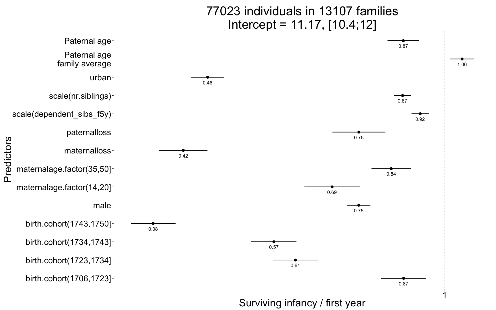
plot_residuals(Survive_infancy)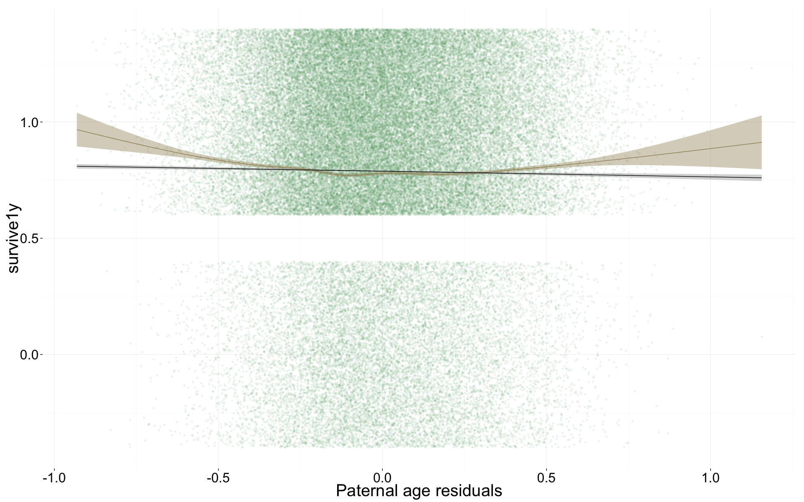
Survive_reproductive <- glmer(
surviveR ~ center(dependent_sibs_f5y) + maternalage.factor + paternalloss + maternalloss + center(nr.siblings) + birth.cohort + male + urban + paternalage.mean + paternalage.diff + (1|idParents),
data= rpqa.1, subset = survive1y == TRUE,
family = 'binomial', control = control_defaults)
summary(Survive_reproductive)## Generalized linear mixed model fit by maximum likelihood (Laplace
## Approximation) [glmerMod]
## Family: binomial ( logit )
## Formula: surviveR ~ center(dependent_sibs_f5y) + maternalage.factor +
## paternalloss + maternalloss + center(nr.siblings) + birth.cohort +
## male + urban + paternalage.mean + paternalage.diff + (1 |
## idParents)
## Data: rpqa.1
## Control: control_defaults
## Subset: survive1y == TRUE
##
## AIC BIC logLik deviance df.resid
## 47800 47944 -23884 47768 60704
##
## Scaled residuals:
## Min 1Q Median 3Q Max
## -3.965 0.277 0.333 0.394 1.034
##
## Random effects:
## Groups Name Variance Std.Dev.
## idParents (Intercept) 0.401 0.633
## Number of obs: 60720, groups: idParents, 12444
##
## Fixed effects:
## Estimate Std. Error z value Pr(>|z|)
## (Intercept) 2.57767 0.04199 61.4 < 2e-16 ***
## center(dependent_sibs_f5y) -0.00912 0.01075 -0.8 0.39621
## maternalage.factor(14,20] 0.01492 0.06037 0.2 0.80479
## maternalage.factor(35,50] 0.06176 0.04146 1.5 0.13636
## paternalloss -0.20947 0.05481 -3.8 0.00013 ***
## maternalloss -0.43880 0.05307 -8.3 < 2e-16 ***
## center(nr.siblings) -0.00311 0.00444 -0.7 0.48437
## birth.cohort(1706,1723] -0.23806 0.04383 -5.4 5.6e-08 ***
## birth.cohort(1723,1734] -0.56565 0.04383 -12.9 < 2e-16 ***
## birth.cohort(1734,1743] -0.35594 0.04496 -7.9 2.5e-15 ***
## birth.cohort(1743,1750] -0.79853 0.04420 -18.1 < 2e-16 ***
## male -0.07122 0.02471 -2.9 0.00394 **
## urban -0.77820 0.03196 -24.4 < 2e-16 ***
## paternalage.mean -0.01312 0.02251 -0.6 0.56006
## paternalage.diff -0.11333 0.03299 -3.4 0.00059 ***
## ---
## Signif. codes: 0 '***' 0.001 '**' 0.01 '*' 0.05 '.' 0.1 ' ' 1
##
## Correlation of Fixed Effects:
## (Intr) c(__5) m.(14, m.(35, ptrnll mtrnll cnt(.) b.(170 b.(172
## cntr(dp__5) -0.157
## mtr.(14,20] -0.123 0.169
## mtr.(35,50] -0.245 0.208 -0.086
## paternallss -0.149 0.080 -0.041 0.113
## maternallss -0.161 0.102 -0.034 0.128 0.103
## cntr(nr.sb) 0.070 -0.395 -0.063 -0.110 0.171 0.175
## b.(1706,172 -0.597 0.009 0.074 -0.035 -0.005 0.000 -0.031
## b.(1723,173 -0.654 0.032 0.096 -0.037 0.010 0.003 -0.041 0.586
## b.(1734,174 -0.646 0.024 0.081 -0.053 0.032 0.008 -0.040 0.556 0.615
## b.(1743,175 -0.678 0.070 0.098 -0.041 0.010 0.008 -0.055 0.564 0.611
## male -0.303 0.007 0.007 0.002 0.014 0.009 -0.003 -0.002 0.007
## urban -0.313 0.104 0.013 0.019 -0.003 0.003 -0.006 0.060 0.102
## paternlg.mn -0.156 0.024 0.049 -0.081 0.014 0.097 -0.171 0.045 0.105
## patrnlg.dff 0.217 -0.037 0.290 -0.662 -0.233 -0.225 0.018 0.009 0.022
## b.(173 b.(174 male urban ptrnlg.m
## cntr(dp__5)
## mtr.(14,20]
## mtr.(35,50]
## paternallss
## maternallss
## cntr(nr.sb)
## b.(1706,172
## b.(1723,173
## b.(1734,174
## b.(1743,175 0.624
## male 0.005 0.002
## urban 0.126 0.159 0.035
## paternlg.mn 0.120 0.132 0.010 -0.035
## patrnlg.dff 0.004 -0.004 0.001 -0.011 0.026Survive_reproductive_coefs = fortify_mine(Survive_reproductive)
plot_fortified_mer(Survive_reproductive_coefs, "Surviving to reproductive age / 15 years")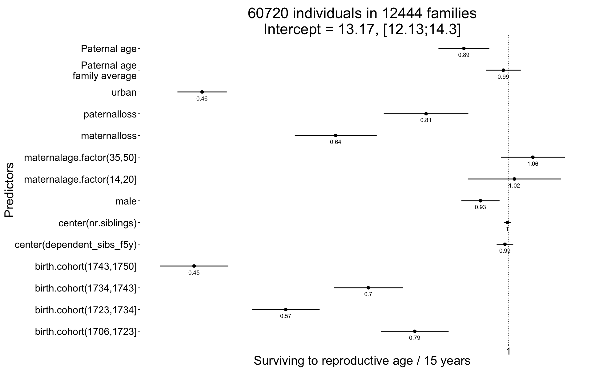
plot_residuals(Survive_reproductive)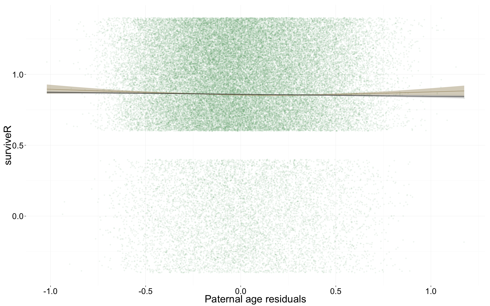
Ever_married <- glmer(
ever_married ~ center(dependent_sibs_f5y) + maternalage.factor + paternalloss + maternalloss + center(nr.siblings) + birth.cohort + male + urban + paternalage.mean + paternalage.diff + (1|idParents),
data= rpqa.1, subset = (surviveR == T | is.na(surviveR)),
family = 'binomial', control = control_defaults )
summary(Ever_married)## Generalized linear mixed model fit by maximum likelihood (Laplace
## Approximation) [glmerMod]
## Family: binomial ( logit )
## Formula: ever_married ~ center(dependent_sibs_f5y) + maternalage.factor +
## paternalloss + maternalloss + center(nr.siblings) + birth.cohort +
## male + urban + paternalage.mean + paternalage.diff + (1 |
## idParents)
## Data: rpqa.1
## Control: control_defaults
## Subset: (surviveR == T | is.na(surviveR))
##
## AIC BIC logLik deviance df.resid
## 63381 63524 -31674 63349 59307
##
## Scaled residuals:
## Min 1Q Median 3Q Max
## -3.112 0.329 0.452 0.554 1.340
##
## Random effects:
## Groups Name Variance Std.Dev.
## idParents (Intercept) 0.362 0.602
## Number of obs: 59323, groups: idParents, 12340
##
## Fixed effects:
## Estimate Std. Error z value Pr(>|z|)
## (Intercept) 1.72610 0.03254 53.0 < 2e-16 ***
## center(dependent_sibs_f5y) -0.04914 0.00901 -5.5 0.000000049 ***
## maternalage.factor(14,20] -0.11525 0.04772 -2.4 0.01572 *
## maternalage.factor(35,50] -0.06410 0.03473 -1.8 0.06495 .
## paternalloss -0.09353 0.04804 -1.9 0.05157 .
## maternalloss -0.18452 0.04879 -3.8 0.00016 ***
## center(nr.siblings) 0.01312 0.00383 3.4 0.00061 ***
## birth.cohort(1706,1723] 0.07615 0.03419 2.2 0.02592 *
## birth.cohort(1723,1734] -0.05608 0.03540 -1.6 0.11319
## birth.cohort(1734,1743] -0.01126 0.03519 -0.3 0.74893
## birth.cohort(1743,1750] 0.11358 0.03733 3.0 0.00235 **
## male -0.63973 0.02083 -30.7 < 2e-16 ***
## urban -0.57138 0.02834 -20.2 < 2e-16 ***
## paternalage.mean -0.10197 0.01894 -5.4 0.000000073 ***
## paternalage.diff -0.06419 0.02734 -2.3 0.01887 *
## ---
## Signif. codes: 0 '***' 0.001 '**' 0.01 '*' 0.05 '.' 0.1 ' ' 1
##
## Correlation of Fixed Effects:
## (Intr) c(__5) m.(14, m.(35, ptrnll mtrnll cnt(.) b.(170 b.(172
## cntr(dp__5) -0.138
## mtr.(14,20] -0.121 0.180
## mtr.(35,50] -0.269 0.211 -0.098
## paternallss -0.149 0.077 -0.039 0.110
## maternallss -0.149 0.095 -0.030 0.114 0.084
## cntr(nr.sb) 0.080 -0.398 -0.068 -0.104 0.161 0.157
## b.(1706,172 -0.556 0.001 0.078 -0.038 -0.005 -0.001 -0.034
## b.(1723,173 -0.593 0.015 0.095 -0.041 0.004 -0.002 -0.047 0.535
## b.(1734,174 -0.607 0.017 0.081 -0.057 0.031 0.005 -0.046 0.516 0.572
## b.(1743,175 -0.580 0.047 0.091 -0.043 0.005 0.001 -0.052 0.483 0.519
## male -0.390 0.011 0.009 0.005 0.009 0.008 -0.004 -0.001 0.003
## urban -0.298 0.086 0.010 0.021 -0.010 -0.004 -0.005 0.068 0.106
## paternlg.mn -0.178 0.026 0.046 -0.080 0.017 0.089 -0.159 0.048 0.109
## patrnlg.dff 0.253 -0.052 0.310 -0.670 -0.223 -0.203 0.030 0.004 0.016
## b.(173 b.(174 male urban ptrnlg.m
## cntr(dp__5)
## mtr.(14,20]
## mtr.(35,50]
## paternallss
## maternallss
## cntr(nr.sb)
## b.(1706,172
## b.(1723,173
## b.(1734,174
## b.(1743,175 0.555
## male 0.001 -0.002
## urban 0.126 0.136 0.030
## paternlg.mn 0.124 0.125 0.010 -0.027
## patrnlg.dff -0.004 -0.018 0.001 -0.017 0.029Ever_married_coefs = fortify_mine(Ever_married)
plot_fortified_mer(Ever_married_coefs, "Odds of ever marrying")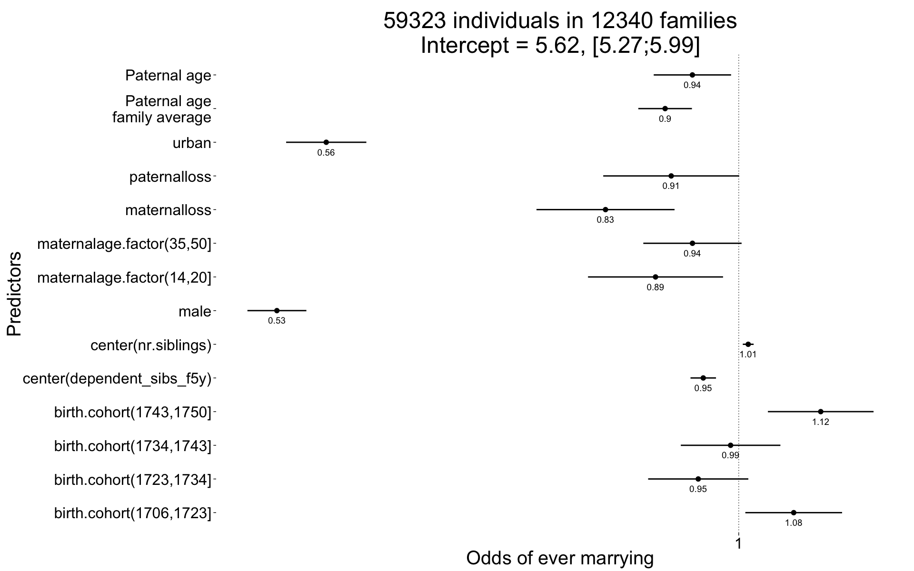
plot_residuals(Ever_married)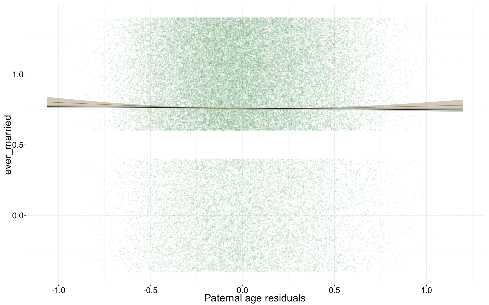
Children <- glmer(
children ~ center(spouses)*male + urban + center(dependent_sibs_f5y) + maternalage.factor + paternalloss + maternalloss + center(nr.siblings) + birth.cohort + paternalage.mean + paternalage.diff + (1|idParents) + (1|idIndividu),
data= rpqa.1, subset = spouses > 0,
family = 'poisson', control = control_defaults )## Warning in checkConv(attr(opt, "derivs"), opt$par, ctrl = control$checkConv, : Model is nearly unidentifiable: very large eigenvalue
## - Rescale variables?summary(Children)## Generalized linear mixed model fit by maximum likelihood (Laplace
## Approximation) [glmerMod]
## Family: poisson ( log )
## Formula:
## children ~ center(spouses) * male + urban + center(dependent_sibs_f5y) +
## maternalage.factor + paternalloss + maternalloss + center(nr.siblings) +
## birth.cohort + paternalage.mean + paternalage.diff + (1 |
## idParents) + (1 | idIndividu)
## Data: rpqa.1
## Control: control_defaults
## Subset: spouses > 0
##
## AIC BIC logLik deviance df.resid
## 275563 275729 -137763 275525 45012
##
## Scaled residuals:
## Min 1Q Median 3Q Max
## -2.023 -0.407 0.136 0.386 0.975
##
## Random effects:
## Groups Name Variance Std.Dev.
## idIndividu (Intercept) 0.2586 0.509
## idParents (Intercept) 0.0278 0.167
## Number of obs: 45031, groups: idIndividu, 45031; idParents, 11717
##
## Fixed effects:
## Estimate Std. Error z value Pr(>|z|)
## (Intercept) 1.938182 0.010746 180.4 < 2e-16 ***
## center(spouses) 0.068701 0.010114 6.8 1.1e-11 ***
## male 0.006442 0.009696 0.7 0.50644
## urban -0.109966 0.009243 -11.9 < 2e-16 ***
## center(dependent_sibs_f5y) -0.006969 0.002681 -2.6 0.00934 **
## maternalage.factor(14,20] 0.013041 0.014025 0.9 0.35246
## maternalage.factor(35,50] 0.000923 0.010505 0.1 0.92997
## paternalloss 0.000065 0.014788 0.0 0.99649
## maternalloss -0.009710 0.015340 -0.6 0.52675
## center(nr.siblings) 0.007664 0.001132 6.8 1.3e-11 ***
## birth.cohort(1706,1723] -0.066994 0.010108 -6.6 3.4e-11 ***
## birth.cohort(1723,1734] -0.072543 0.010590 -6.9 7.4e-12 ***
## birth.cohort(1734,1743] -0.055299 0.010452 -5.3 1.2e-07 ***
## birth.cohort(1743,1750] -0.040619 0.010843 -3.7 0.00018 ***
## paternalage.mean -0.026675 0.005672 -4.7 2.6e-06 ***
## paternalage.diff -0.022817 0.008021 -2.8 0.00445 **
## center(spouses):male 0.180100 0.013020 13.8 < 2e-16 ***
## ---
## Signif. codes: 0 '***' 0.001 '**' 0.01 '*' 0.05 '.' 0.1 ' ' 1
##
## Correlation of Fixed Effects:
## (Intr) cntr() male urban c(__5) m.(14, m.(35, ptrnll mtrnll
## centr(spss) -0.511
## male -0.455 0.555
## urban -0.224 -0.006 0.012
## cntr(dp__5) -0.108 -0.001 -0.006 0.075
## mtr.(14,20] -0.101 0.001 0.007 0.007 0.182
## mtr.(35,50] -0.238 -0.008 -0.003 0.011 0.222 -0.093
## paternallss -0.139 0.000 0.009 -0.005 0.079 -0.039 0.112
## maternallss -0.127 0.000 0.003 -0.007 0.090 -0.033 0.113 0.087
## cntr(nr.sb) 0.058 0.011 0.007 -0.006 -0.396 -0.064 -0.112 0.161 0.162
## b.(1706,172 -0.507 0.005 0.002 0.067 -0.005 0.075 -0.038 -0.001 -0.006
## b.(1723,173 -0.526 -0.001 0.007 0.097 0.007 0.087 -0.040 0.010 -0.008
## b.(1734,174 -0.552 0.015 0.003 0.115 0.008 0.077 -0.057 0.038 0.005
## b.(1743,175 -0.548 0.031 0.003 0.127 0.045 0.093 -0.042 0.010 -0.003
## paternlg.mn -0.155 0.004 0.000 -0.026 0.026 0.045 -0.074 0.023 0.088
## patrnlg.dff 0.237 0.005 0.003 -0.011 -0.073 0.300 -0.675 -0.221 -0.193
## cntr(spss): 0.394 -0.775 -0.774 0.009 0.007 0.000 0.005 -0.003 0.003
## cnt(.) b.(170 b.(172 b.(173 b.(174 ptrnlg.m ptrnlg.d
## centr(spss)
## male
## urban
## cntr(dp__5)
## mtr.(14,20]
## mtr.(35,50]
## paternallss
## maternallss
## cntr(nr.sb)
## b.(1706,172 -0.036
## b.(1723,173 -0.044 0.540
## b.(1734,174 -0.043 0.525 0.567
## b.(1743,175 -0.054 0.503 0.528 0.567
## paternlg.mn -0.170 0.058 0.112 0.134 0.138
## patrnlg.dff 0.051 0.004 0.013 -0.004 -0.015 0.022
## cntr(spss): -0.013 -0.010 -0.006 -0.007 -0.014 0.004 -0.005Children_coefs = fortify_mine(Children)
plot_fortified_mer(Children_coefs, "Nr. Children (of those who had at least one spouse)")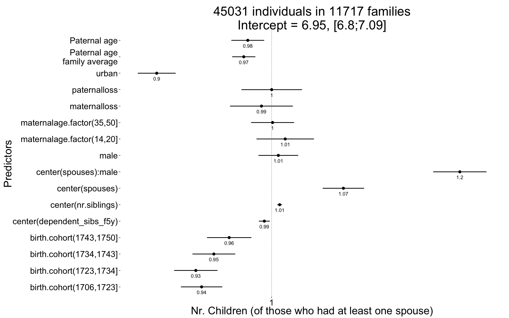
plot_residuals(Children)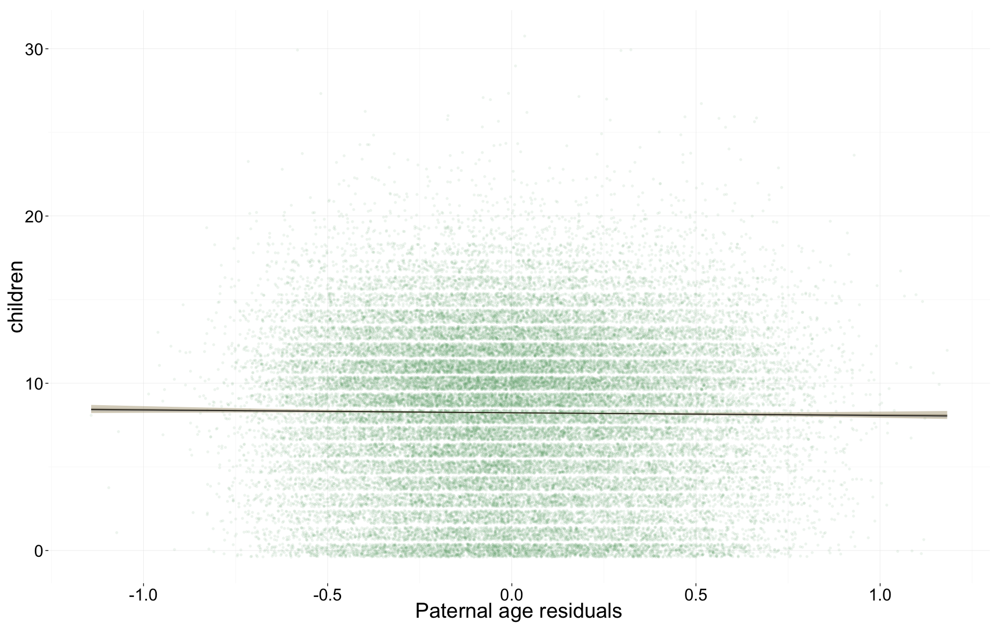
Children.surviving1y <- glmer(
children.surviving1y ~ center(children) + center(dependent_sibs_f5y) + maternalage.factor + paternalloss + maternalloss + center(nr.siblings) + birth.cohort + male + urban + paternalage.mean + paternalage.diff + (1|idParents) + (1|idIndividu),
data= rpqa.1, subset = children > 0,
family = 'poisson', control = control_defaults )## Warning in checkConv(attr(opt, "derivs"), opt$par, ctrl = control$checkConv, : Model is nearly unidentifiable: very large eigenvalue
## - Rescale variables?summary(Children.surviving1y)## Generalized linear mixed model fit by maximum likelihood (Laplace
## Approximation) [glmerMod]
## Family: poisson ( log )
## Formula:
## children.surviving1y ~ center(children) + center(dependent_sibs_f5y) +
## maternalage.factor + paternalloss + maternalloss + center(nr.siblings) +
## birth.cohort + male + urban + paternalage.mean + paternalage.diff +
## (1 | idParents) + (1 | idIndividu)
## Data: rpqa.1
## Control: control_defaults
## Subset: children > 0
##
## AIC BIC logLik deviance df.resid
## 181715 181871 -90840 181679 42257
##
## Scaled residuals:
## Min 1Q Median 3Q Max
## -5.694 -0.561 0.088 0.591 1.956
##
## Random effects:
## Groups Name Variance Std.Dev.
## idIndividu (Intercept) 0.00000 0.0000
## idParents (Intercept) 0.00107 0.0327
## Number of obs: 42275, groups: idIndividu, 42275; idParents, 11541
##
## Fixed effects:
## Estimate Std. Error z value Pr(>|z|)
## (Intercept) 1.424188 0.005894 241.6 < 2e-16 ***
## center(children) 0.103498 0.000444 233.2 < 2e-16 ***
## center(dependent_sibs_f5y) 0.009232 0.001617 5.7 1.1e-08 ***
## maternalage.factor(14,20] 0.022138 0.008500 2.6 0.0092 **
## maternalage.factor(35,50] 0.007890 0.006485 1.2 0.2237
## paternalloss -0.008336 0.009124 -0.9 0.3609
## maternalloss -0.005705 0.009516 -0.6 0.5488
## center(nr.siblings) -0.005185 0.000648 -8.0 1.2e-15 ***
## birth.cohort(1706,1723] -0.101147 0.005911 -17.1 < 2e-16 ***
## birth.cohort(1723,1734] -0.112343 0.006107 -18.4 < 2e-16 ***
## birth.cohort(1734,1743] -0.111714 0.005994 -18.6 < 2e-16 ***
## birth.cohort(1743,1750] -0.080795 0.006219 -13.0 < 2e-16 ***
## male -0.010026 0.003844 -2.6 0.0091 **
## urban -0.152743 0.005711 -26.7 < 2e-16 ***
## paternalage.mean 0.002472 0.003224 0.8 0.4431
## paternalage.diff -0.010320 0.004960 -2.1 0.0375 *
## ---
## Signif. codes: 0 '***' 0.001 '**' 0.01 '*' 0.05 '.' 0.1 ' ' 1
##
## Correlation of Fixed Effects:
## (Intr) cntr() c(__5) m.(14, m.(35, ptrnll mtrnll cnt(.) b.(170
## cntr(chldr) -0.466
## cntr(dp__5) -0.119 0.006
## mtr.(14,20] -0.117 -0.002 0.181
## mtr.(35,50] -0.273 0.001 0.221 -0.074
## paternallss -0.155 0.001 0.074 -0.046 0.118
## maternallss -0.146 0.012 0.083 -0.037 0.120 0.090
## cntr(nr.sb) 0.066 -0.044 -0.420 -0.071 -0.117 0.167 0.165
## b.(1706,172 -0.501 0.018 -0.014 0.074 -0.043 -0.001 -0.008 -0.037
## b.(1723,173 -0.502 0.003 -0.002 0.090 -0.045 0.008 -0.014 -0.044 0.482
## b.(1734,174 -0.517 0.004 -0.006 0.081 -0.061 0.038 0.004 -0.033 0.490
## b.(1743,175 -0.509 0.013 0.037 0.100 -0.044 0.005 -0.010 -0.042 0.472
## male -0.255 -0.143 -0.008 0.010 -0.003 0.011 0.012 0.005 -0.018
## urban -0.237 0.034 0.065 0.006 0.005 -0.005 -0.008 -0.004 0.068
## paternlg.mn -0.179 0.032 0.029 0.045 -0.076 0.021 0.085 -0.170 0.067
## patrnlg.dff 0.249 0.000 -0.076 0.288 -0.668 -0.222 -0.194 0.055 0.015
## b.(172 b.(173 b.(174 male urban ptrnlg.m
## cntr(chldr)
## cntr(dp__5)
## mtr.(14,20]
## mtr.(35,50]
## paternallss
## maternallss
## cntr(nr.sb)
## b.(1706,172
## b.(1723,173
## b.(1734,174 0.493
## b.(1743,175 0.474 0.491
## male -0.002 -0.007 -0.008
## urban 0.096 0.110 0.120 0.026
## paternlg.mn 0.122 0.144 0.147 0.004 -0.021
## patrnlg.dff 0.031 0.022 0.018 -0.003 -0.006 0.025Children.surviving1y_coefs = fortify_mine(Children.surviving1y)
plot_fortified_mer(Children.surviving1y_coefs, "Nr. Children who survive first year (of those who survived infancy")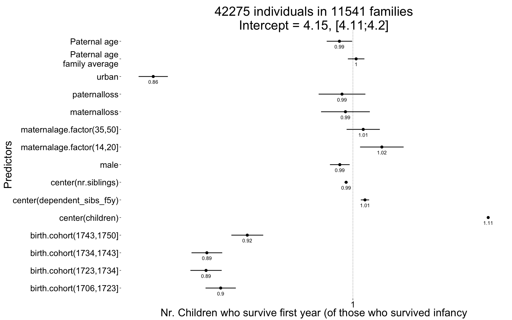
plot_residuals(Children.surviving1y)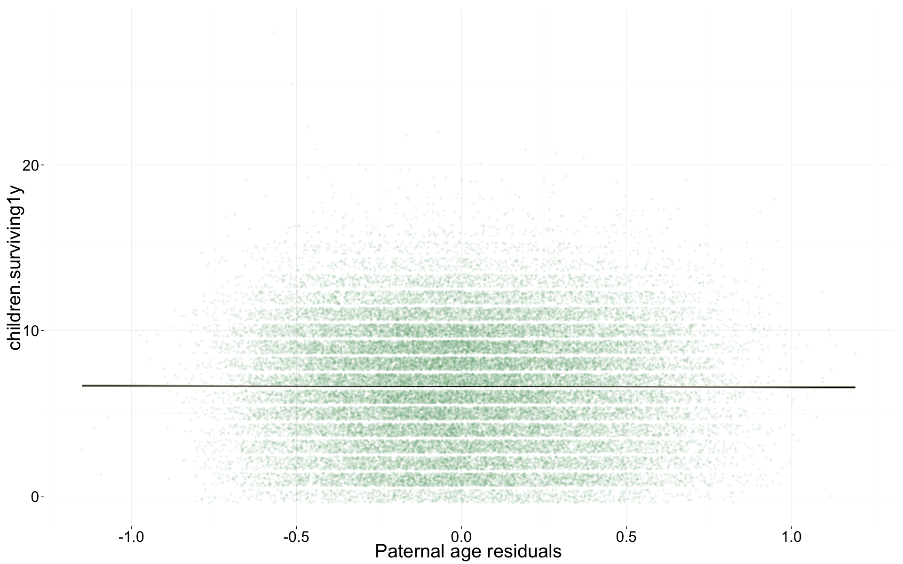
Grandchildren.per.Child <- glmer(
grandchildren ~ center(children) + center(dependent_sibs_f5y) + maternalage.factor + paternalloss + maternalloss + center(nr.siblings) + male + urban + paternalage.mean + paternalage.diff + (1|idParents) + (1|idIndividu),
data= rpqa.1, subset = children > 0 & byear <= 1700,
family = 'poisson', control = control_defaults )
summary(Grandchildren.per.Child)## Generalized linear mixed model fit by maximum likelihood (Laplace
## Approximation) [glmerMod]
## Family: poisson ( log )
## Formula: grandchildren ~ center(children) + center(dependent_sibs_f5y) +
## maternalage.factor + paternalloss + maternalloss + center(nr.siblings) +
## male + urban + paternalage.mean + paternalage.diff + (1 |
## idParents) + (1 | idIndividu)
## Data: rpqa.1
## Control: control_defaults
## Subset: children > 0 & byear <= 1700
##
## AIC BIC logLik deviance df.resid
## 58789 58884 -29381 58761 6497
##
## Scaled residuals:
## Min 1Q Median 3Q Max
## -2.1733 -0.1406 0.0358 0.1353 0.6577
##
## Random effects:
## Groups Name Variance Std.Dev.
## idIndividu (Intercept) 0.520 0.721
## idParents (Intercept) 0.105 0.324
## Number of obs: 6511, groups: idIndividu, 6511; idParents, 2053
##
## Fixed effects:
## Estimate Std. Error z value Pr(>|z|)
## (Intercept) 2.51416 0.02469 101.8 < 2e-16 ***
## center(children) 0.17260 0.00248 69.5 < 2e-16 ***
## center(dependent_sibs_f5y) 0.00189 0.00989 0.2 0.84884
## maternalage.factor(14,20] 0.00815 0.03480 0.2 0.81477
## maternalage.factor(35,50] 0.00992 0.03664 0.3 0.78654
## paternalloss -0.00432 0.04676 -0.1 0.92645
## maternalloss -0.11223 0.05405 -2.1 0.03785 *
## center(nr.siblings) -0.00404 0.00409 -1.0 0.32312
## male -0.03925 0.02011 -2.0 0.05104 .
## urban -0.27321 0.02573 -10.6 < 2e-16 ***
## paternalage.mean -0.03423 0.01943 -1.8 0.07805 .
## paternalage.diff -0.09332 0.02593 -3.6 0.00032 ***
## ---
## Signif. codes: 0 '***' 0.001 '**' 0.01 '*' 0.05 '.' 0.1 ' ' 1
##
## Correlation of Fixed Effects:
## (Intr) cntr() c(__5) m.(14, m.(35, ptrnll mtrnll cnt(.) male
## cntr(chldr) -0.480
## cntr(dp__5) -0.139 0.019
## mtr.(14,20] -0.089 0.000 0.252
## mtr.(35,50] -0.365 0.009 0.228 -0.102
## paternallss -0.216 0.014 0.102 -0.039 0.128
## maternallss -0.186 0.029 0.080 -0.026 0.097 0.069
## cntr(nr.sb) 0.153 -0.020 -0.398 -0.046 -0.153 0.123 0.117
## male -0.345 -0.068 -0.004 0.026 -0.010 0.012 0.015 0.021
## urban -0.293 0.015 -0.016 -0.029 -0.011 0.017 -0.030 0.025 0.010
## paternlg.mn -0.270 -0.001 0.053 0.051 -0.032 0.041 0.080 -0.224 -0.007
## patrnlg.dff 0.334 -0.016 -0.089 0.390 -0.631 -0.245 -0.183 0.138 0.008
## urban ptrnlg.m
## cntr(chldr)
## cntr(dp__5)
## mtr.(14,20]
## mtr.(35,50]
## paternallss
## maternallss
## cntr(nr.sb)
## male
## urban
## paternlg.mn 0.026
## patrnlg.dff 0.013 0.002Grandchildren.per.Child_coefs = fortify_mine(Grandchildren.per.Child)
plot_fortified_mer(Grandchildren.per.Child_coefs, "Nr. of grandchildren per child")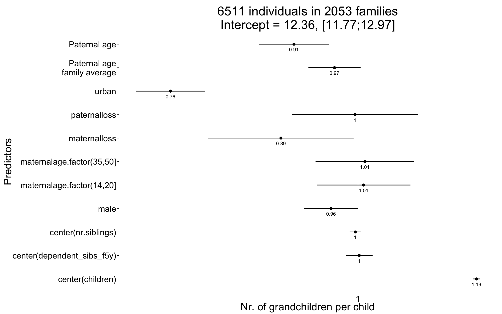
plot_residuals(Grandchildren.per.Child)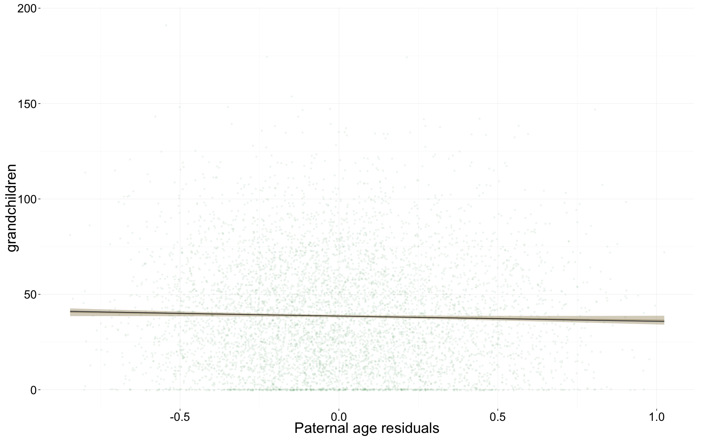
Any_surviving_children <- glmer(
any_surviving_children ~ center(dependent_sibs_f5y) + maternalage.factor + paternalloss + maternalloss + center(nr.siblings) + birth.cohort + male + urban + paternalage.mean + paternalage.diff + (1|idParents),
data= rpqa.1, subset = byear <= 1740,
family = 'binomial', control = control_defaults )
summary(Any_surviving_children)## Generalized linear mixed model fit by maximum likelihood (Laplace
## Approximation) [glmerMod]
## Family: binomial ( logit )
## Formula:
## any_surviving_children ~ center(dependent_sibs_f5y) + maternalage.factor +
## paternalloss + maternalloss + center(nr.siblings) + birth.cohort +
## male + urban + paternalage.mean + paternalage.diff + (1 |
## idParents)
## Data: rpqa.1
## Control: control_defaults
## Subset: byear <= 1740
##
## AIC BIC logLik deviance df.resid
## 81802 81937 -40886 81772 61146
##
## Scaled residuals:
## Min 1Q Median 3Q Max
## -1.935 -0.921 -0.441 0.886 2.525
##
## Random effects:
## Groups Name Variance Std.Dev.
## idParents (Intercept) 0.27 0.52
## Number of obs: 61161, groups: idParents, 9756
##
## Fixed effects:
## Estimate Std. Error z value Pr(>|z|)
## (Intercept) 0.60098 0.02557 23.5 < 2e-16 ***
## center(dependent_sibs_f5y) -0.03622 0.00799 -4.5 0.0000059 ***
## maternalage.factor(14,20] -0.12445 0.03933 -3.2 0.00155 **
## maternalage.factor(35,50] -0.08730 0.03001 -2.9 0.00362 **
## paternalloss -0.16894 0.04121 -4.1 0.0000415 ***
## maternalloss -0.48652 0.04122 -11.8 < 2e-16 ***
## center(nr.siblings) -0.00498 0.00335 -1.5 0.13683
## birth.cohort(1706,1723] -0.12085 0.02618 -4.6 0.0000039 ***
## birth.cohort(1723,1734] -0.39656 0.02719 -14.6 < 2e-16 ***
## birth.cohort(1734,1743] -0.29031 0.02971 -9.8 < 2e-16 ***
## male -0.31702 0.01741 -18.2 < 2e-16 ***
## urban -0.77123 0.02409 -32.0 < 2e-16 ***
## paternalage.mean -0.02004 0.01646 -1.2 0.22347
## paternalage.diff -0.07755 0.02305 -3.4 0.00077 ***
## ---
## Signif. codes: 0 '***' 0.001 '**' 0.01 '*' 0.05 '.' 0.1 ' ' 1
##
## Correlation of Fixed Effects:
## (Intr) c(__5) m.(14, m.(35, ptrnll mtrnll cnt(.) b.(170 b.(172
## cntr(dp__5) -0.151
## mtr.(14,20] -0.122 0.203
## mtr.(35,50] -0.296 0.229 -0.096
## paternallss -0.169 0.082 -0.037 0.115
## maternallss -0.176 0.109 -0.031 0.125 0.095
## cntr(nr.sb) 0.094 -0.417 -0.082 -0.115 0.156 0.159
## b.(1706,172 -0.569 -0.002 0.082 -0.045 -0.006 -0.002 -0.040
## b.(1723,173 -0.620 0.031 0.102 -0.045 0.008 0.002 -0.064 0.569
## b.(1734,174 -0.582 0.014 0.080 -0.059 0.033 0.004 -0.065 0.501 0.570
## male -0.360 0.017 0.007 0.007 0.009 0.009 -0.007 -0.001 0.009
## urban -0.293 0.065 0.007 0.023 -0.006 -0.001 0.011 0.057 0.095
## paternlg.mn -0.181 0.023 0.044 -0.079 0.016 0.094 -0.166 0.055 0.121
## patrnlg.dff 0.293 -0.060 0.319 -0.667 -0.230 -0.215 0.037 0.000 -0.006
## b.(173 male urban ptrnlg.m
## cntr(dp__5)
## mtr.(14,20]
## mtr.(35,50]
## paternallss
## maternallss
## cntr(nr.sb)
## b.(1706,172
## b.(1723,173
## b.(1734,174
## male 0.007
## urban 0.106 0.019
## paternlg.mn 0.123 0.003 -0.031
## patrnlg.dff -0.032 0.000 -0.020 0.018Any_surviving_children_coefs = fortify_mine(Any_surviving_children)
plot_fortified_mer(Any_surviving_children_coefs, "Surviving infancy / first year")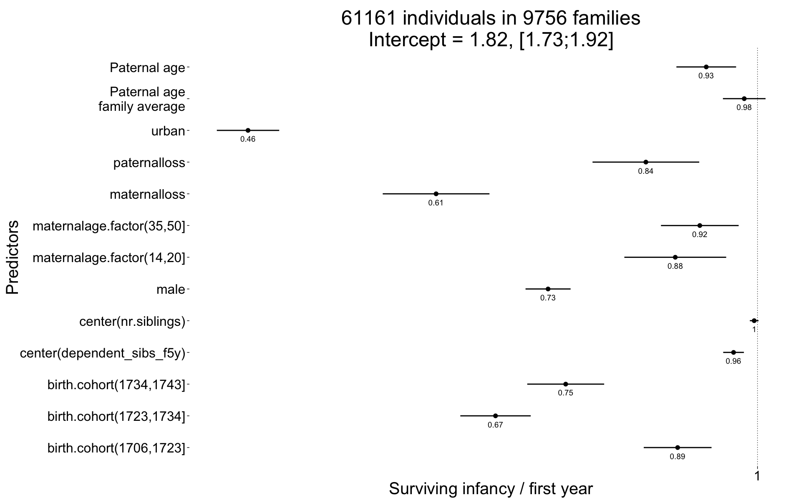
plot_residuals(Any_surviving_children)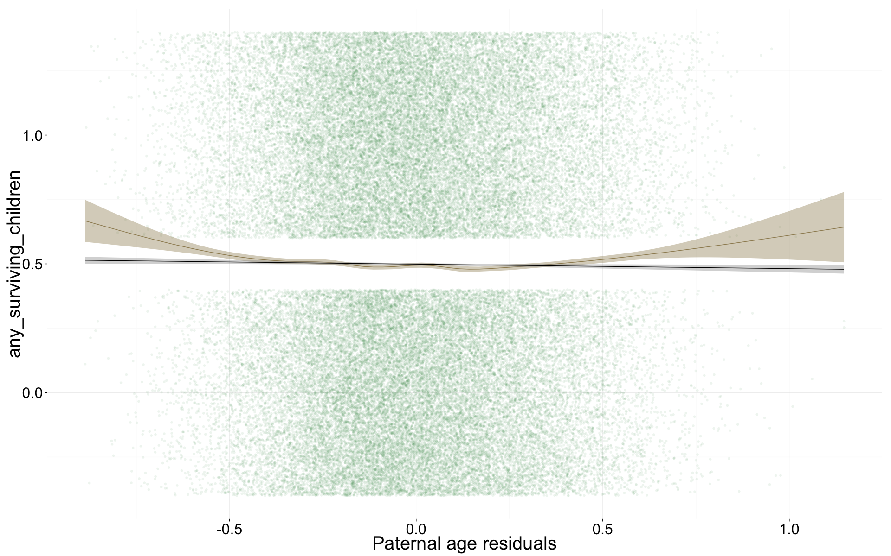
name = "rpqa_main_controls"
save(list = lstype('confint.merMod'),file=paste0("coefs/",name,"_coefs.rdata"))
save(list = lstype(),file=paste0("coefs/",name,"_models.rdata"))sessionInfo()## R version 3.1.3 (2015-03-09)
## Platform: x86_64-apple-darwin13.4.0 (64-bit)
## Running under: OS X 10.10.2 (Yosemite)
##
## locale:
## [1] en_US.UTF-8/en_US.UTF-8/en_US.UTF-8/C/en_US.UTF-8/en_US.UTF-8
##
## attached base packages:
## [1] parallel grid graphics grDevices utils datasets stats
## [8] methods base
##
## other attached packages:
## [1] haven_0.2.0 effects_3.0-3 pscl_1.4.9 doMC_1.3.3
## [5] iterators_1.0.7 foreach_1.4.2 MCMCglmm_2.22 ape_3.2
## [9] coda_0.17-1 blme_1.0-2 lme4_1.1-7 Rcpp_0.11.5
## [13] Matrix_1.2-0 zoo_1.7-12 QuantPsyc_1.5 MASS_7.3-40
## [17] boot_1.3-16 psych_1.5.1 foreign_0.8-63 mgcv_1.8-6
## [21] nlme_3.1-120 Hmisc_3.15-0 Formula_1.2-1 survival_2.38-1
## [25] lattice_0.20-31 reshape2_1.4.1 lubridate_1.3.3 car_2.0-25
## [29] stringi_0.4-1 dplyr_0.4.1 pander_0.5.2 knitr_1.9
## [33] rmarkdown_0.6.1 plyr_1.8.1 ggplot2_1.0.1 formr_0.1.17
## [37] data.table_1.9.5 stringr_0.6.2 devtools_1.7.0
##
## loaded via a namespace (and not attached):
## [1] acepack_1.3-3.3 assertthat_0.1 chron_2.3-45
## [4] cluster_2.0.1 codetools_0.2-11 colorspace_1.2-6
## [7] corpcor_1.6.7 cubature_1.1-2 DBI_0.3.1
## [10] digest_0.6.8 evaluate_0.6 formatR_1.1
## [13] formula.tools_1.3.4 gtable_0.1.2 htmltools_0.2.6
## [16] labeling_0.3 latticeExtra_0.6-26 lazyeval_0.1.10
## [19] magrittr_1.5 memoise_0.2.1 minqa_1.2.4
## [22] mnormt_1.5-2 munsell_0.4.2 nloptr_1.0.4
## [25] nnet_7.3-9 operator.tools_1.3.0 pbkrtest_0.4-2
## [28] proto_0.3-10 quantreg_5.11 RColorBrewer_1.1-2
## [31] rpart_4.1-9 scales_0.2.4 SparseM_1.6
## [34] splines_3.1.3 tensorA_0.36 tools_3.1.3date()## [1] "Thu May 28 21:22:35 2015"